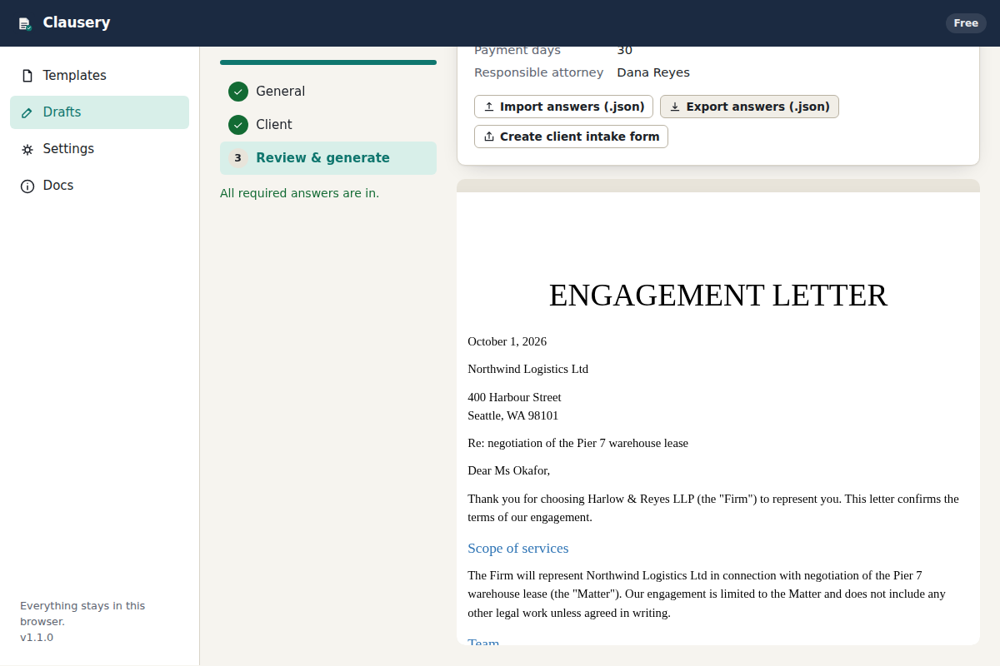

Document automation that never leaves your browser.
Turn the Word templates you already use into guided questionnaires. Answer the questions, and Clausery assembles the finished .docx on your computer. Nothing is uploaded, no account is needed, and it works with the Wi‑Fi off.

Built for people who cannot upload client files
Law firms, HR teams and consultancies draft the same documents every week from the same templates. The tools that automate this are cloud services that want the client's data first. Clausery does the same job with a different architecture: the browser does all the work, and the data never travels.
Confidentiality by construction
Templates, answers and generated documents are processed in memory in your browser and stored only on your device. There is no server that could be breached, subpoenaed or misconfigured.
Your Word templates, unchanged
Add tags like {client_name} to any .docx. Fonts, numbering, headers, tables and tracked formatting come through exactly as you set them in Word.
Works offline, forever
Once loaded, Clausery runs with no connection at all. Install it as an app and keep drafting on a train, in court, or on a client site with no guest Wi‑Fi.
Three steps from template to finished document
Tag your template
Open your existing document in Word and replace the parts that change with tags:
{client_name},{#has_retainer}…{/has_retainer},{#attorneys}{name}{/attorneys}. Save as .docx.Shape the questionnaire
Drop the file into Clausery. Every tag becomes a question with a sensible type. Group questions into sections, add help text, make questions conditional, and add calculations.
Answer and generate
Start a draft, walk through the sections, download the finished .docx or print to PDF. Drafts save as you type and can be regenerated at any time.
Everything a drafting tool needs. Nothing that phones home.
Conditional clauses
Show or hide any part of the document based on answers: yes/no questions, choices, or expressions like fee_type == "flat" and amount > 5000.
Repeating groups
Parties, attorneys, beneficiaries, line items: add as many as needed and the document repeats paragraphs, bullets or table rows for each one.
Calculations
Totals, dates, durations and amounts in words: format_money(sum(items.amount) * 1.2), add_days(signed_on, 30), words(term_years).
Encrypted workspace
Optionally encrypt everything stored in the browser with a passphrase (AES-256-GCM). The workspace locks itself after inactivity.
Offline client intake
Export a questionnaire as a single HTML file. The client fills it in on their own computer and sends back an answers file. No portal, no account for them either.
Template packs for teams
Export a firm's templates as a pack and share it over your existing file share or email. Everyone drafts from the same approved versions.
Start with a free template
Seven ready-made Word templates, each one click away from a finished document.
How it compares
Cloud document-automation platforms are excellent products with a price and an architecture designed for larger firms. Clausery is for everyone else.
| Capability | Clausery | Cloud automation platforms | Manual find-and-replace |
|---|---|---|---|
| Where client data is processed | Your browser only | Vendor's servers | Your computer |
| Conditional clauses, repeats, calculations | Yes | Yes | No |
| Works offline | Yes | No | Yes |
| Setup time | Minutes | Days to weeks, often with onboarding | None |
| Vendor security questionnaire needed | No data shared, so usually no | Yes | No |
| Typical price | Free, or from $19 per user per month | From about $83 to $417 per month, or $49 to $149 per user | Your time |
Price ranges are the published 2026 entry and mid tiers of two widely used legal document-automation products; see the pricing page for sources. Feature comparisons are general and vary by product.
Verify it yourself
Open your browser's Network panel while you draft. The only requests are for Clausery's own files from the site that serves it (the app, the sample templates, the intake-form runtime), and once installed they come from the offline cache. Nothing you type or upload is ever sent: not to us, not to analytics, not to anyone. The source is readable, the document engine is open-source, and you can host a copy on your own domain or intranet.
"Seventy percent of respondents prioritized a data privacy policy when vetting vendors." Legal professionals surveyed on 2026 technology adoption; the cheapest privacy policy to audit is the one that says the data never left your machine.
Questions
Does it really not send anything anywhere?
Correct. The app is static files. Once your browser has loaded them, everything (reading the template, evaluating your answers, assembling the .docx) happens in the page. Storage is your browser's local database. The only outbound requests in the entire product are the ones that fetch the app itself.
What happens to my data if I clear my browser?
It is deleted, like any local data. Clausery reminds you to download backups, and you can export template packs and answers as files to keep on your own drive or file share.
Which template features are supported?
Tags, conditional sections, inverted sections, repeating groups (including in bullet lists and table rows), line breaks in answers, headers and footers. Formatting is whatever you set in Word. See the template syntax.
Can clients fill in a questionnaire?
Yes, without a portal. Export a client intake form (a single HTML file), send it, and import the answers file that comes back. It runs on their computer the same way the app runs on yours.
Is this legal advice? Is the output reviewed?
No. Clausery is software that fills in the templates you give it. The content, review and sign-off of every document remain with you.
How do teams share templates?
With template packs: a file that carries a set of templates and their questionnaires. Put it on the shared drive; everyone imports it. Licensing is per user, verified offline with a signed key.
Draft your next document without uploading anything.
Free for up to three templates. No account, no card, no trial clock.